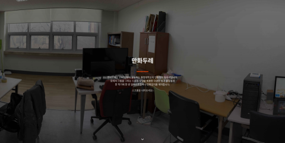

자기소개
안녕하세요! 소프트웨어 개발을 좋아하고 노트북에 리눅스를 설치해서 쓰는 신연진입니다.
웹 프로그래밍을 취미로 하며, 프로그래밍으로 문제를 해결하는 것을 좋아합니다.
Typescript와 React를 이용한 풀스택 웹개발을 해본 경험이 있습니다.
지금 보고 계신 이 포토폴리오는 https://yeonjin.name/portfolio에서도 보실 수 있습니다!
-
2019 ~ 20242019 ~ 2024
중앙대학교 소프트웨어학부
학점: 4.29/4.5- 2021 ~ 2022년: 군휴학(병역필)
- 2020년 1학기, 2020년 2학기, 2023년 1학기, 2023년 2학기 학년우수 장학금 수령[1]
- 2024년 8월 조기졸업예정(예상)
프로젝트
특별한 언급이 없다면 제가 전부 다 만든 프로젝트입니다. 다만 몇몇 오픈 소스 프로젝트의 경우 다른 개발자분의 기여가 있습니다만 대부분의 코드는 제가 작성했습니다.
-
20232023
알고모여
알고리즘 스터디를 더 편리하게 할 수 있도록 하기 위해 만들어진 프로젝트로, 저는 프론트엔드를 담당하였으며 React를 이용했습니다.
이 프로젝트는 다음과 같은 기능을 제공하며, 현재 개발중입니다.- 스터디원의 과제풀이 여부 자동 확인
- 저장/불러오기/실행 기능이 있는 IDE
- 소스 코드의 공유 및 피드백 기능
-
2022 ~ 20232022 ~ 2023
SketchDaily reference 어플리케이션
- https://github.com/LiteHell/unofficial-sketchdaily-app
- https://play.google.com/store/apps/details?id=info.litehell.sketchdaily
군대에서 SketchDaily references 사이트를 이용해서 그림 연습을 했는데, 핸드폰에서 웹사이트 이용하기가 은근히 불편해서 직접 만든 어플리케이션입니다.
Flutter로 개발했으며, SketchDaily references 사이트로부터 레퍼런스 이미지를 무작위로 가져와 표시해줍니다. 스케치나 크로키 연습에 유용합니다. -
20222022
중앙대학교 강의시간표 미리보기
중앙대학교 강의시간표 정식공개일 이전에 다음 학기 강의시간표를 미리 볼 수 있게 하는 서비스입니다. React와 Typescript로 개발했으며 크롤링 스크립트는 Javascript로 간단하게 작성했습니다.
Javascript로 작성된 크롤링 스크립트를 crontab으로 주기적으로 실행하며, 스크립트는 크롤링된 결과를 json과 csv파일로 저장합니다. React로 작성된 프론트엔드는 크롤링된 json 파일을 불러와 시간표 만들기 및 강의 검색 기능을 제공합니다.
csv파일은 엑셀로 불러오고 싶은 사람들을 위해 제공되는 것으로, 프론트엔드에서 특별히 이용되진 않습니다.정식공개일 이전에 보는 서비스이므로 100% 정확하지 않지만 참고용으로는 큰 도움이 됩니다.
-
20202020
만화두레 홈페이지
중앙동아리 만화두레의 홍보를 위해 제작된 홈페이지입니다.
React, TypeScript, Node.js, MariaDB를 이용했으며, 만화두레 회원관리 시스템의 관리자 아이디로 로그인하여 홈페이지를 수정할 수 있습니다.2020년부터 2023년까지 운영됐으며, 2024년부터는 동아리 회장단의 결정에 따라 운영되지 않습니다.
-
20202020

만화두레 회원관리 시스템
- https://github.com/ManhwaDure/manduid-backend
- https://github.com/ManhwaDure/manduid-frontend
-
https://id.caumd.club
중앙동아리 만화두레의 회원관리 및 입부원서 모집을 위해 제작된 홈페이지입니다.
Vue, TypeScript, MariaDB, Node.js를 이용했으며 제공하는 기능은 다음과 같습니다.
- 입부원서 접수 및 기록 보존
- 회원명부 관리 및 기록 보존
- 통합 인증 구현
- 권한 인수인계
2020년부터 2023년까지 운영됐으며, 2024년부터는 동아리 회장단의 결정에 따라 운영되지 않습니다.
-
20192019
중앙대학교 공지사항 RSS
중앙대학교의 각종 공지사항을 RSS나 Atom 피드 형태로 제공하여 실시간 구독할 수 있도록 해주는 서비스입니다.
본래 Javascript로 작성했지만 2023년에 Go언어로 재작성했습니다. -
20192019
중앙대학교 학사일정 ICS
중앙대학교 학사일정을 구글 캘린더나 아웃룩 등에서 구독할 수 있도록 iCalendar 형태로 제공하는 서비스입니다.
본래 Javascript로 작성했었지만 2023년에 Go언어로 재작성했습니다. -
2015 ~ 20192015 ~ 2019

NamuFix
나무위키의 편집과 관리를 편하게 해주는 웹 브라우저 확장 스크립트입니다.
오픈소스 소프트웨어로서 약 100개의 이슈를 해결했으며, 대략적으로 다음과 같은 기능을 가지고 있습니다.- 드래그-드롭 및 복사-붙여넣기를 통한 이미지 업로드나 임시저장 등 편집을 편리하게 해주는 기능 추가
- 즉시차단 링크, 일괄차단 링크 등 위키 관리를 편하게 해주는 기능 추가
- 토론 UI에 아이덴티콘을 추가하고 토론에서의 인용을 쉽게 볼 수 있게 하는 등 토론을 편리하게 해주는 기능 추가
어학 및 자격증
-
2023 .10.2023 .10.
TOPCIT 수준4 (695점)
-
2023. 07.2023. 07.
OPIc IH
-
2022. 12.2022. 12.
정보처리산업기사
-
2020 .08.2020 .08.
TOEIC 810점
교내 활동
-
2023
-
20232023
알고리즘 학회 ChAOS 부회장
소프트웨어학부 알고리즘 학회 ChAOS의 부회장직을 역임하며 다음과 같은 활동을 했습니다.
- 알고리즘 문제풀이 스터디 활동 운영
- 알고리즘 경진대회 스태프 참여
-
20202020
만화두레 부회장
중앙동아리 만화두레의 부회장을 역임하며 다음과 같은 활동을 했습니다.
- 회계내역 작성, 동아리 관련 행정 및 사무
- 그림 스터디 활동 운영
- 동아리 홈페이지의 개발 및 유지보수
- 동아리 내부위키의 유지보수 (현재는 운영되지 않음)